Post-process effects
This page covers cinematic and screen-space effects driven by
RenderQualitySettings — DoF, lens flares, vignette, motion blur, SSR,
SSAO, SSIL, contact shadows, refraction, and stylized looks plus the debug
visualisation passes. WeatherSettings overrides atmospheric state (fog,
wetness, sky) and is documented in Weather and atmospherics. Bloom, HDR/IBL, and PBR
materials live in PBR materials and Lighting, shadows, and HDR/IBL.
Cinematic post-process effects
RenderQualitySettings exposes a large set of optional screen-space effects.
Each one is gated by an *Enabled flag so the fast frame path stays cheap;
turn them on per-shot for screenshots, asset inspection, or demo captures.
Cinematic lens and image effects:
viewerVignetteStrength— radial darkening.viewerChromaticAberrationStrength— RGB channel offset.viewerFilmGrainStrength— luma-noise overlay.lensFlareGhostStrength,lensFlareStreakStrength,lensFlareTint— cinematic lens flares around bright lights.lensDistortionEnabled/lensDistortionStrength/lensDistortionCenter— signed barrel or pincushion distortion.letterboxEnabled/letterboxAspect/letterboxColor— cinematic letterboxing.starburstEnabled/starburstStrength/starburstSpikes/starburstAngleOffset/starburstRadius/starburstTint— aperture-shaped highlights.zoomBlurEnabled/zoomBlurStrength/zoomBlurCenter/zoomBlurInnerRadius— radial focus blur for sprint and dash effects.motionBlurEnabled/motionBlurDirection/motionBlurStrength— directional motion blur.depthOfFieldEnabled/depthOfFieldFocusDistance/depthOfFieldFocusRange/depthOfFieldMaxRadius.
Stylized and diagnostic looks:
pixelateEnabled/pixelateBlockSize— retro pixelation.posterizeEnabled/posterizeLevels— color quantization.scanlineEnabled/scanlineStrength/scanlineFrequency— CRT-style scanlines.nightVisionEnabled/nightVisionStrength/nightVisionGain— monochrome green amplification.thermalEnabled/thermalStrength/thermalGain— heatmap LUT.ditherEnabled/ditherStrength— banding-control dither.
Atmospheric and water effects:
underwaterEnabled/underwaterTint/underwaterCausticStrength/underwaterCausticScale/underwaterDepthExtinction.heatHazeEnabled/heatHazeStrength/heatHazeFrequency/heatHazeSpeed/heatHazeMaxY.lightShaftsEnabled/lightShaftsStrength/lightShaftsDecay/lightShaftsDensity— god rays from the main light.
Screen-space reflections and refraction:
ssrEnabled,ssrStrength,ssrSteps,ssrMaxDistance,ssrThickness— depth-only screen-space reflections.screenSpaceRefraction,screenSpaceRefractionStrength,screenSpaceRefractionMaxPixels— IOR-aware refraction for transparent meshes.
Indirect lighting and contact effects:
screenSpaceAoEnabled,screenSpaceAoRadius,screenSpaceAoStrength,screenSpaceAoBias,screenSpaceAoSamples,screenSpaceAoFalloff,screenSpaceAoRadiusWorldSpace,screenSpaceAoMaxPixelRadius,screenSpaceAoGeometryAware— SSAO controls.screenSpaceAoDenoiseEnabled,screenSpaceAoDenoiseStrength,screenSpaceAoDenoiseRadius,screenSpaceAoDenoiseDepthSigma— geometry-aware AO denoise.contactShadowsEnabled,contactShadowsLength,contactShadowsStrength,contactShadowsThickness— short-range raymarched contact shadows.contactAoRadius/contactAoStrength/contactAoSamples/contactAoFalloff— tight contact AO on top of SSAO.screenSpaceIndirectLightingEnabledand friends (screenSpaceIndirectLightingRadius,Strength,Samples,Falloff,NormalRejection,Saturation) — single-bounce SSIL.
Specular AA, aerial perspective, and detail normals:
specularAntiAliasing/specularAntiAliasingStrength— geometry-aware specular filtering on high-frequency surfaces.aerialPerspectiveEnabled/aerialPerspectiveStrength— distance-based atmospheric tinting driven by the sky LUTs.detailNormalEnabled/detailNormalScale/detailNormalStrength— high-frequency normal detail for close-up shots.viewerSubsurfaceWrap/viewerSubsurfaceTint— wrap-light approximation for soft subsurface response on skin and foliage.
Bloom controls (bloomEnabled, bloomThreshold, bloomStrength,
bloomRadius, bloomKnee, bloomQuality, bloomSourceClamp,
bloomAnamorphic, bloomDirtStrength, bloomDirtScale,
bloomDirtTexture, bloomMix) cover both clean and lens-dirt looks.
Diagnostics: PostProcessDebugMode (Final, BloomSource,
AmbientOcclusion, AmbientOcclusionRaw, FogTransmittance,
FogDensity, FogScattering, WorldNormal, DepthHeatmap,
ScreenSpaceIndirectLighting) routes a debug pass to the final image so the
underlying buffers can be inspected without leaving the normal render path.
A full cinematic frame typically enables several of these together. The snippet below pairs bloom + DoF + vignette + chromatic aberration + film grain + lens flare + a slight letterbox for a film-shot look:
auto quality = raisin::RayraiWindow::defaultRenderQualitySettings(
raisin::RayraiWindow::RenderQualityPreset::Ultra);
quality.colorMode = raisin::ViewerColorMode::AcesApprox;
quality.pbrToneMapping = true;
quality.viewerColorGradePreset = raisin::ColorGradePreset::Cinematic;
quality.bloomEnabled = true;
quality.bloomThreshold = 1.10f;
quality.bloomStrength = 0.22f;
quality.depthOfFieldEnabled = true;
quality.depthOfFieldFocusDistance = 5.0f;
quality.depthOfFieldFocusRange = 1.5f;
quality.depthOfFieldMaxRadius = 1.4f;
quality.viewerVignetteStrength = 0.40f;
quality.viewerChromaticAberrationStrength = 0.08f;
quality.viewerFilmGrainStrength = 0.05f;
quality.lensFlareGhostStrength = 0.45f;
quality.lensFlareStreakStrength = 0.30f;
quality.lensFlareTint = glm::vec3(0.55f, 0.78f, 1.10f);
quality.letterboxEnabled = true;
quality.letterboxAspect = 2.35f;
viewer.setRenderQualitySettings(quality);
{kind=link}
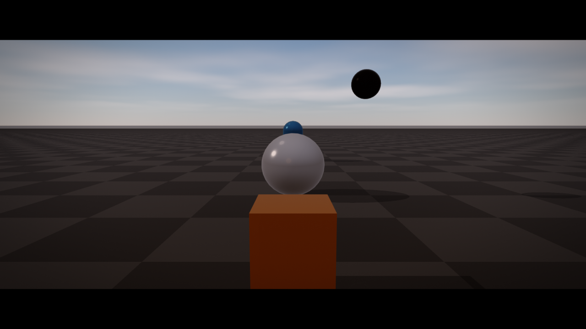
For inspection, route a debug mode to the final image:
auto q = viewer.getRenderQualitySettings();
q.postProcessDebugMode = raisin::PostProcessDebugMode::AmbientOcclusion;
viewer.setRenderQualitySettings(q);
Screen-space reflections, AO, and indirect lighting
Screen-space reflections (ssrEnabled) march the depth buffer along each
reflected ray and sample the colour buffer at the first hit. The result is a
cheap, depth-only approximation that captures puddle reflections, glossy
floors, and glass-like mirror surfaces without authoring a reflection probe.
Tune the trade-off with ssrStrength, ssrSteps, ssrMaxDistance, and
ssrThickness.
Screen-space ambient occlusion (screenSpaceAoEnabled) darkens crevices,
corners, and tight contacts using screenSpaceAoRadius (with
screenSpaceAoRadiusWorldSpace to switch from pixel to metres),
screenSpaceAoSamples, screenSpaceAoFalloff, and
screenSpaceAoStrength. The denoise pass
(screenSpaceAoDenoiseEnabled) is geometry-aware and preserves edges.
contactAoRadius / contactAoStrength add a separate tight contact-AO
pass on top of SSAO for surfaces that touch.
Screen-space indirect lighting (screenSpaceIndirectLightingEnabled)
bounces one indirect ray per pixel against the colour buffer to add coloured
fill light from nearby diffuse surfaces; Radius, Strength, Samples,
Falloff, NormalRejection, and Saturation control quality and bias.
Contact shadows (contactShadowsEnabled) ray-march short shadow rays in
screen space to recover fine occlusion near grazing geometry that a shadow
map misses; Length, Strength, and Thickness are in metres.
auto quality = raisin::RayraiWindow::defaultRenderQualitySettings(
raisin::RayraiWindow::RenderQualityPreset::High);
// Screen-space reflections.
quality.ssrEnabled = true;
quality.ssrStrength = 0.85f;
quality.ssrSteps = 32;
quality.ssrMaxDistance = 8.0f;
quality.ssrThickness = 0.35f;
// SSAO with denoise.
quality.screenSpaceAoEnabled = true;
quality.screenSpaceAoRadius = 1.5f;
quality.screenSpaceAoStrength = 0.65f;
quality.screenSpaceAoSamples = 16;
quality.screenSpaceAoRadiusWorldSpace = true; // radius is metres
quality.screenSpaceAoDenoiseEnabled = true;
quality.screenSpaceAoDenoiseStrength = 0.75f;
// Tight contact AO on top of SSAO.
quality.contactAoRadius = 0.04f;
quality.contactAoStrength = 0.55f;
// Single-bounce screen-space indirect lighting.
quality.screenSpaceIndirectLightingEnabled = true;
quality.screenSpaceIndirectLightingStrength = 0.45f;
quality.screenSpaceIndirectLightingSamples = 12;
// Short raymarched contact shadows that recover fine creases.
quality.contactShadowsEnabled = true;
quality.contactShadowsLength = 0.18f;
quality.contactShadowsStrength = 0.7f;
quality.contactShadowsThickness = 0.06f;
viewer.setRenderQualitySettings(quality);
{kind=link}
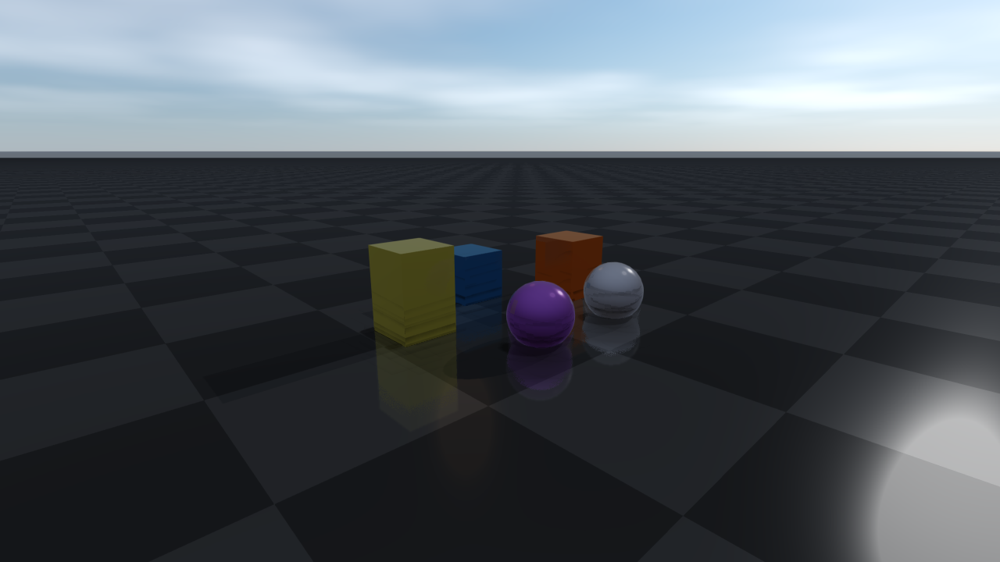
Screen-space reflections (SSR) |
Screen-space indirect lighting (SSIL) |
|---|---|
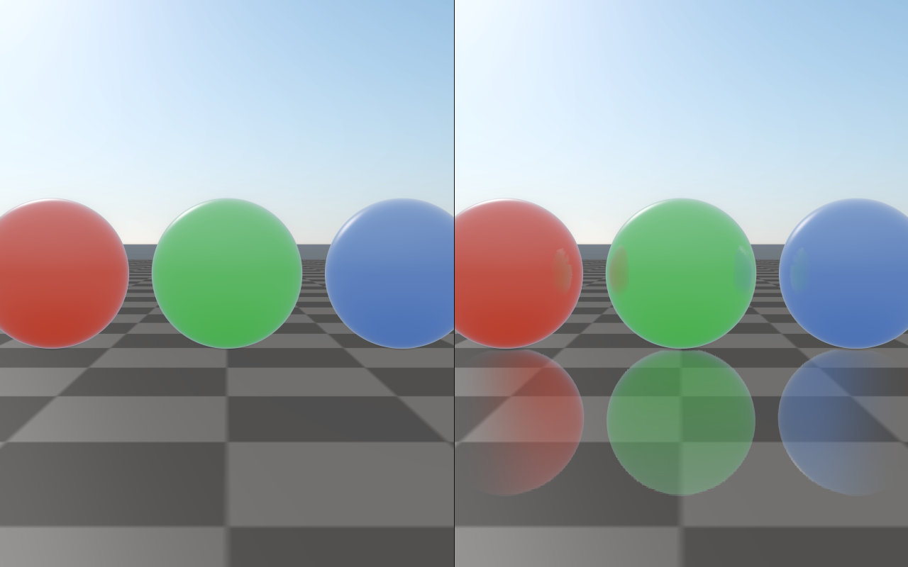 |
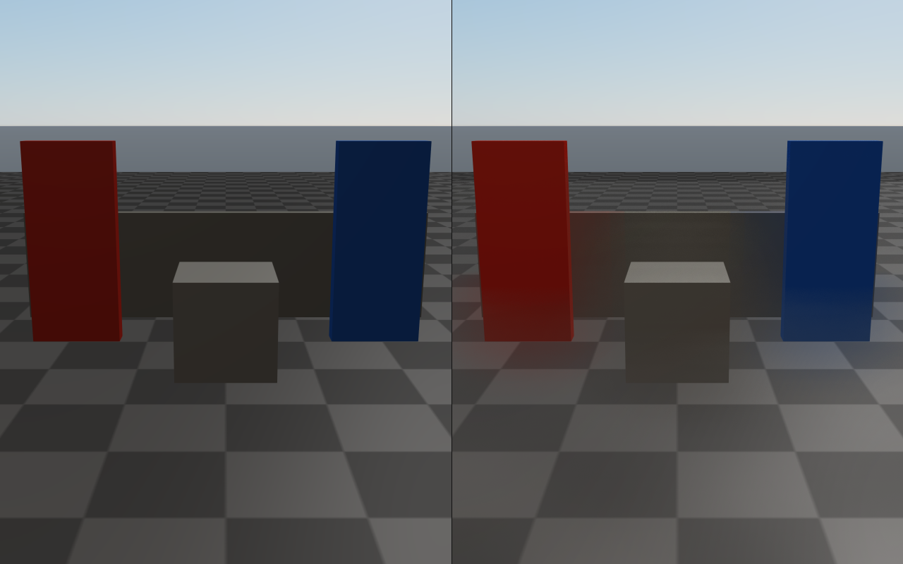 |
Contact shadows |
Screen-space refraction |
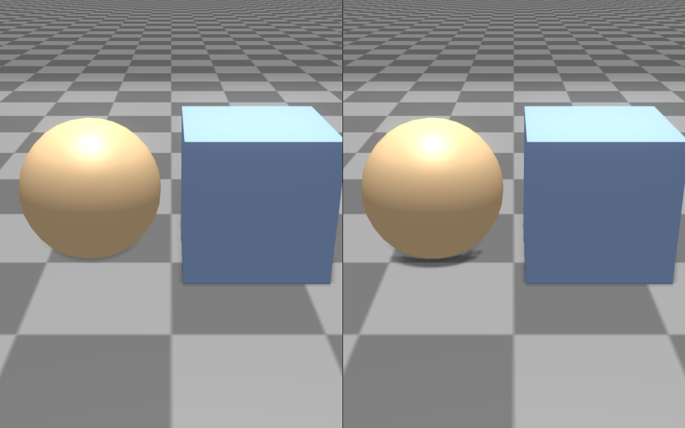 |
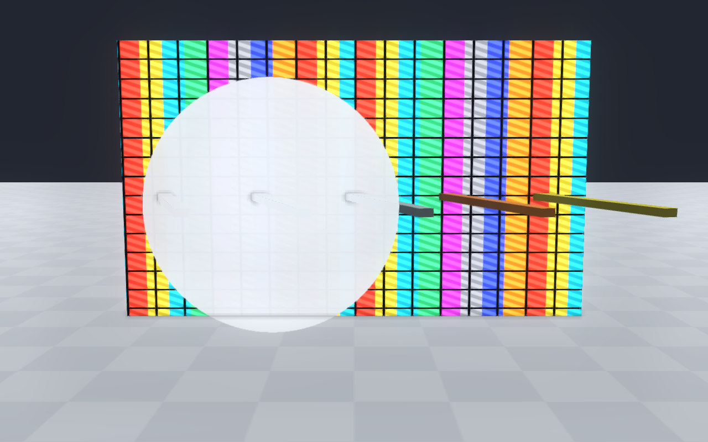 |
Depth of field, lens flares, and lens character
Depth of field (depthOfFieldEnabled, depthOfFieldFocusDistance,
depthOfFieldFocusRange, depthOfFieldMaxRadius) uses a hex-bokeh disk
and a depth-driven circle-of-confusion sample. The hex shape is intentionally
cinematic; starburstEnabled adds an aperture-shaped highlight starburst
for in-focus bright sources.
Lens flare uses two layers: ghost reflections projected toward the screen
centre (lensFlareGhostStrength) and an axial streak from very bright
sources (lensFlareStreakStrength). Both share lensFlareTint (a cool
cinematic blue by default).
viewerVignetteStrength, viewerChromaticAberrationStrength, and
viewerFilmGrainStrength add the rest of the standard photographic camera
character. lensDistortionEnabled applies signed barrel / pincushion
distortion centred at lensDistortionCenter.
auto quality = viewer.getRenderQualitySettings();
// Depth of field with cinematic hex bokeh.
quality.depthOfFieldEnabled = true;
quality.depthOfFieldFocusDistance = 4.5f; // metres
quality.depthOfFieldFocusRange = 1.8f; // metres of in-focus band
quality.depthOfFieldMaxRadius = 1.6f; // pixels at far blur
// Aperture-shaped highlight starburst.
quality.starburstEnabled = true;
quality.starburstStrength = 0.6f;
quality.starburstSpikes = 6;
// Lens flare (ghosts and axial streak).
quality.lensFlareGhostStrength = 0.55f;
quality.lensFlareStreakStrength = 0.35f;
quality.lensFlareTint = glm::vec3(0.62f, 0.78f, 1.10f); // cool cinematic
// Camera character.
quality.viewerVignetteStrength = 0.35f;
quality.viewerChromaticAberrationStrength = 0.08f;
quality.viewerFilmGrainStrength = 0.04f;
// Optional barrel distortion.
quality.lensDistortionEnabled = true;
quality.lensDistortionStrength = 0.12f; // > 0 = barrel, < 0 = pincushion
viewer.setRenderQualitySettings(quality);
Depth of field |
Hex bokeh detail |
|---|---|
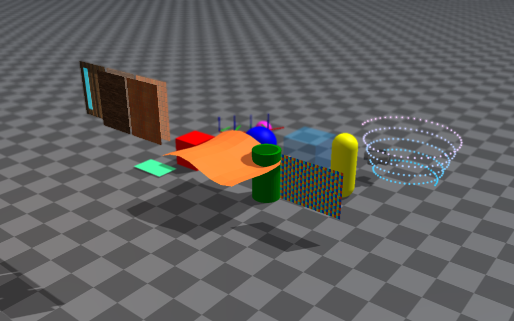 |
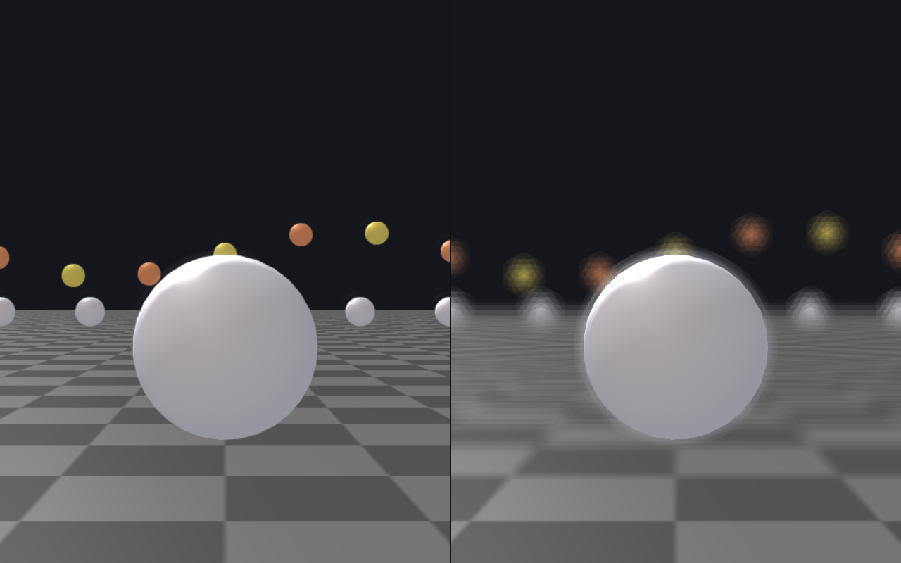 |
Lens flare |
Lens character (vignette + grain + CA) |
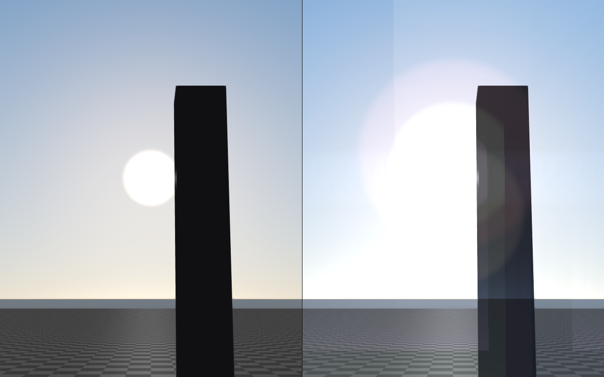 |
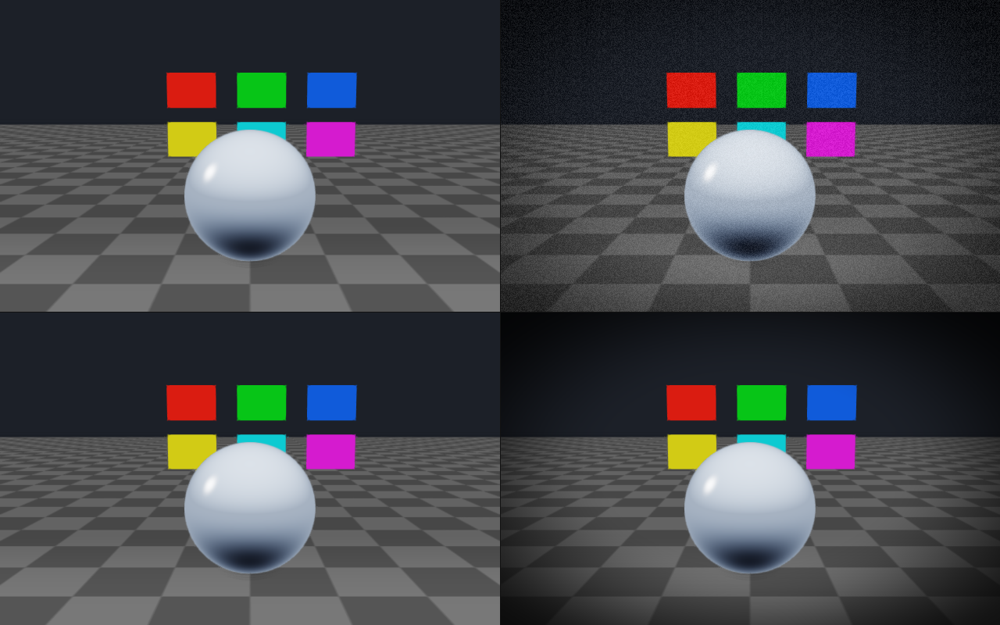 |
Motion blur and atmospheric effects
Directional motion blur (motionBlurEnabled, motionBlurDirection,
motionBlurStrength) smears the colour buffer along a constant screen-space
vector. Useful for shutter-style captures and stylized motion frames.
Heat haze (heatHazeEnabled) perturbs UVs with a noise field above
heatHazeMaxY in screen space, simulating hot air shimmer. Underwater
(underwaterEnabled, underwaterTint, underwaterCausticStrength,
underwaterCausticScale, underwaterDepthExtinction) tints the image,
adds animated caustic patterns, and attenuates by depth.
auto q = viewer.getRenderQualitySettings();
// Directional motion blur — typical "running camera" look.
q.motionBlurEnabled = true;
q.motionBlurDirection = glm::vec2(1.0f, 0.0f); // horizontal sweep
q.motionBlurStrength = 0.45f;
// Hot tarmac shimmer above the horizon line.
q.heatHazeEnabled = true;
q.heatHazeStrength = 0.30f;
q.heatHazeFrequency = 5.0f;
q.heatHazeSpeed = 1.2f;
q.heatHazeMaxY = 0.60f;
// Underwater scene.
q.underwaterEnabled = true;
q.underwaterTint = glm::vec3(0.20f, 0.55f, 0.85f);
q.underwaterCausticStrength = 0.6f;
q.underwaterCausticScale = 1.0f;
q.underwaterDepthExtinction = 1.2f;
// High-frequency detail normals on every PBR surface.
q.detailNormalEnabled = true;
q.detailNormalScale = 30.0f; // cycles per metre
q.detailNormalStrength = 0.18f;
viewer.setRenderQualitySettings(q);
Motion blur |
Heat haze |
|---|---|
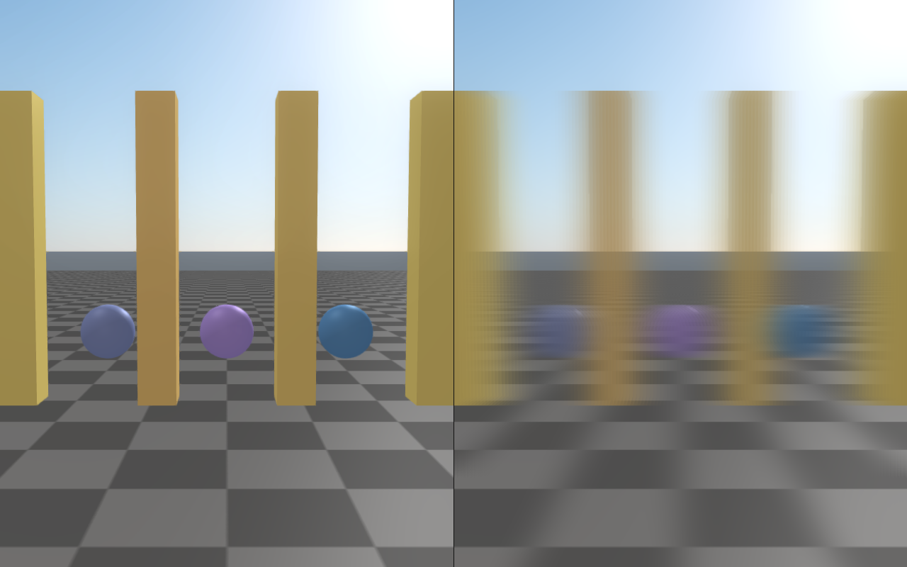 |
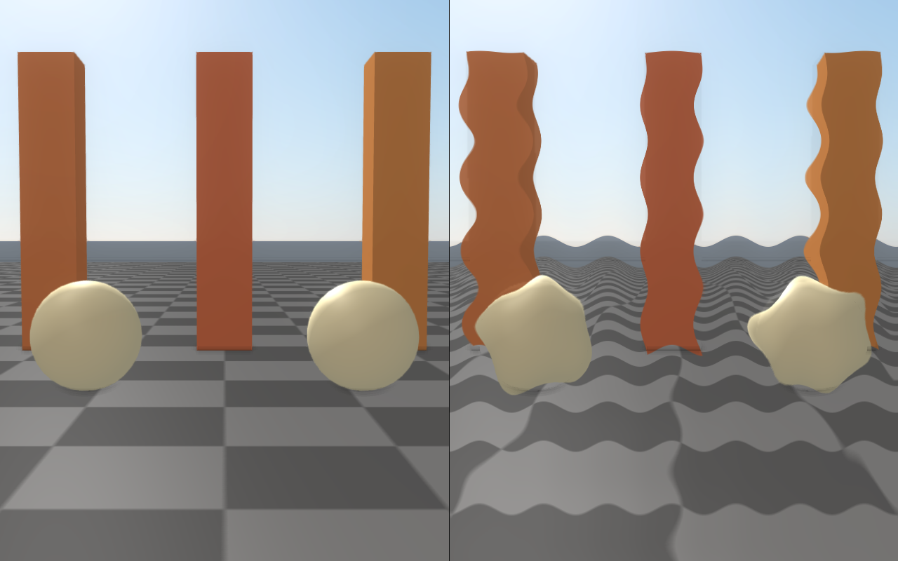 |
Underwater |
Detail normals |
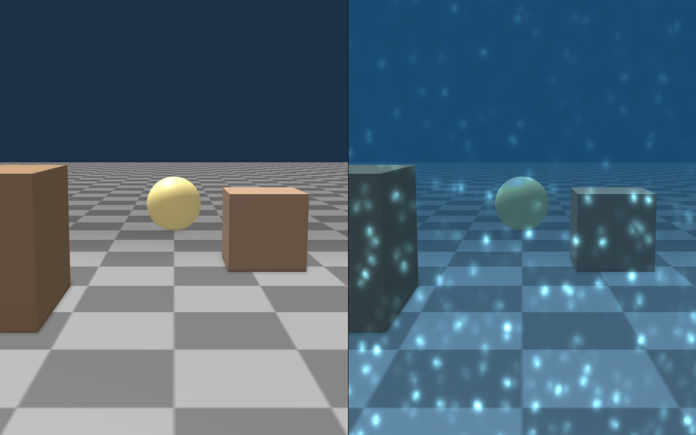 |
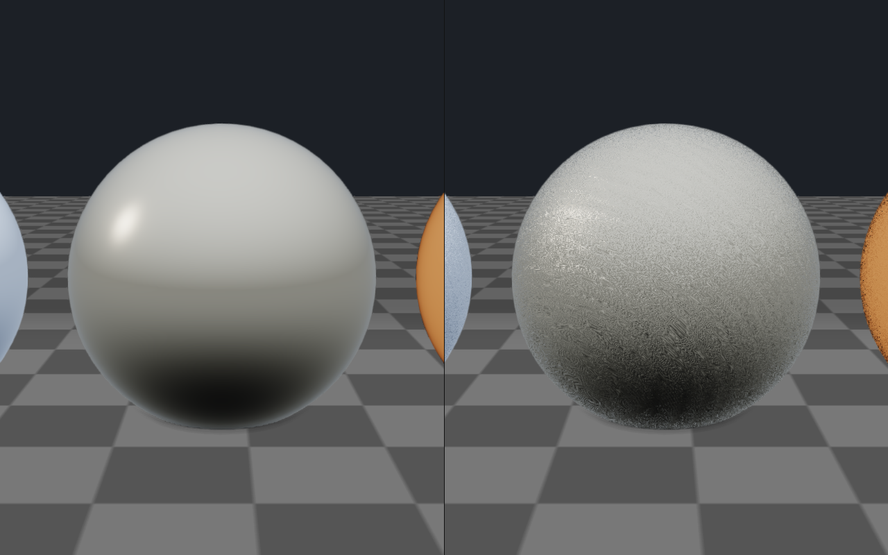 |
Stylized and diagnostic looks
The stylized post-process effects on RenderQualitySettings are useful for
authoring previews and for inspection of specific buffers without leaving the
normal render path. Thermal and night vision are typical operator-camera
looks; the calibration reference is intended to drive
analyzeRgbaCalibrationPatches for capture-pipeline tuning.
auto q = viewer.getRenderQualitySettings();
// Thermal LUT (monochrome heat-map).
q.thermalEnabled = true;
q.thermalStrength = 1.0f;
q.thermalGain = 1.5f;
// Night vision (green amplification with noise).
q.nightVisionEnabled = true;
q.nightVisionStrength = 1.0f;
q.nightVisionGain = 2.5f;
// CRT scanlines + posterize + lens distortion for an arcade look.
q.scanlineEnabled = true;
q.scanlineStrength = 0.35f;
q.scanlineFrequency = 480.0f;
q.posterizeEnabled = true;
q.posterizeLevels = 6;
q.lensDistortionEnabled = true;
q.lensDistortionStrength = -0.12f; // pincushion
viewer.setRenderQualitySettings(q);
// Pick one debug pass at a time for inspection.
auto debug = viewer.getRenderQualitySettings();
debug.postProcessDebugMode = raisin::PostProcessDebugMode::DepthHeatmap;
viewer.setRenderQualitySettings(debug);
Thermal |
Night vision |
|---|---|
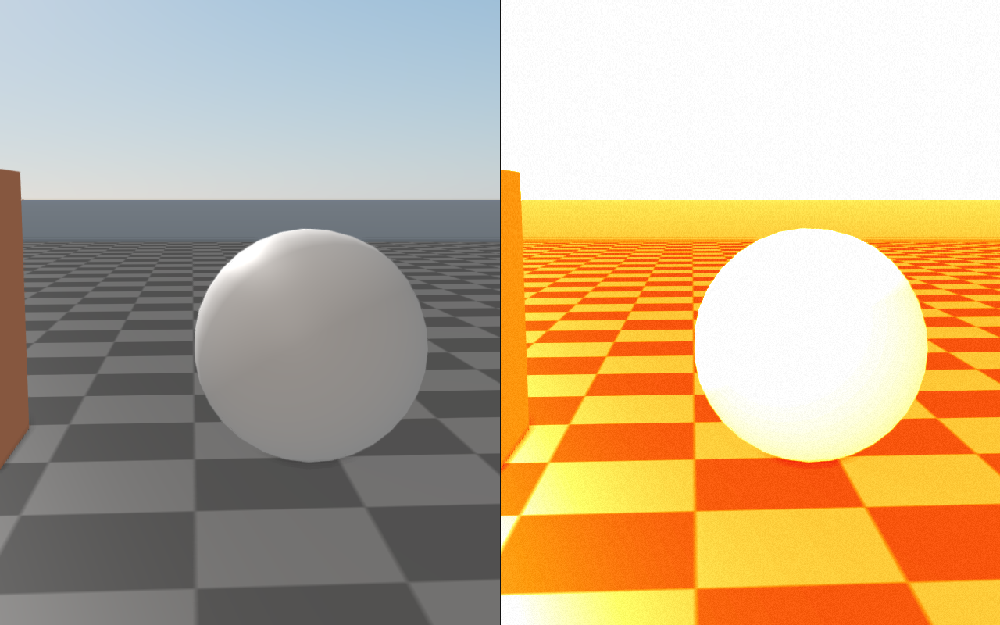 |
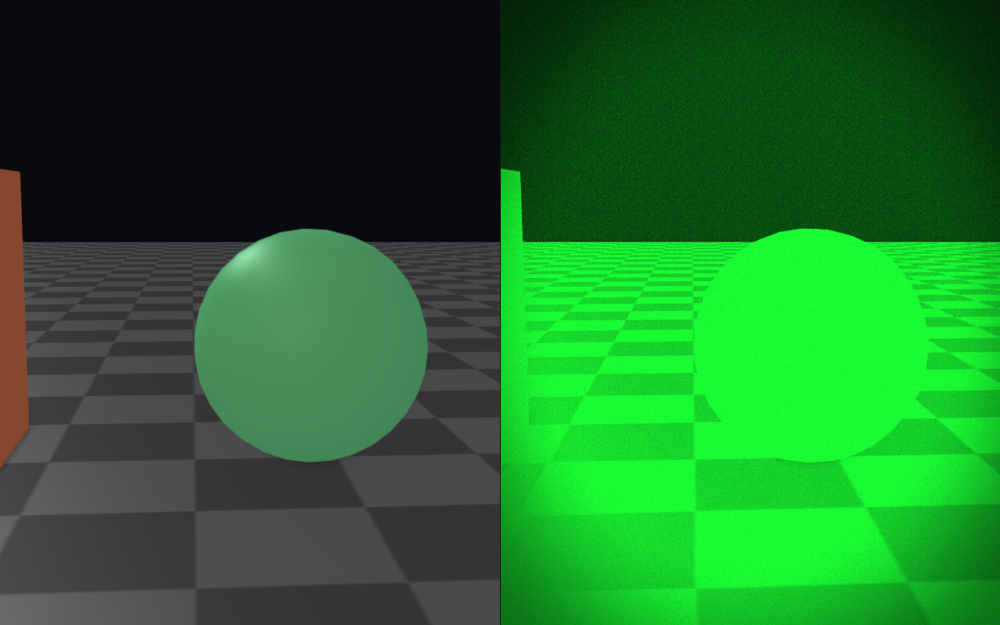 |
Auto exposure |
Calibration reference |
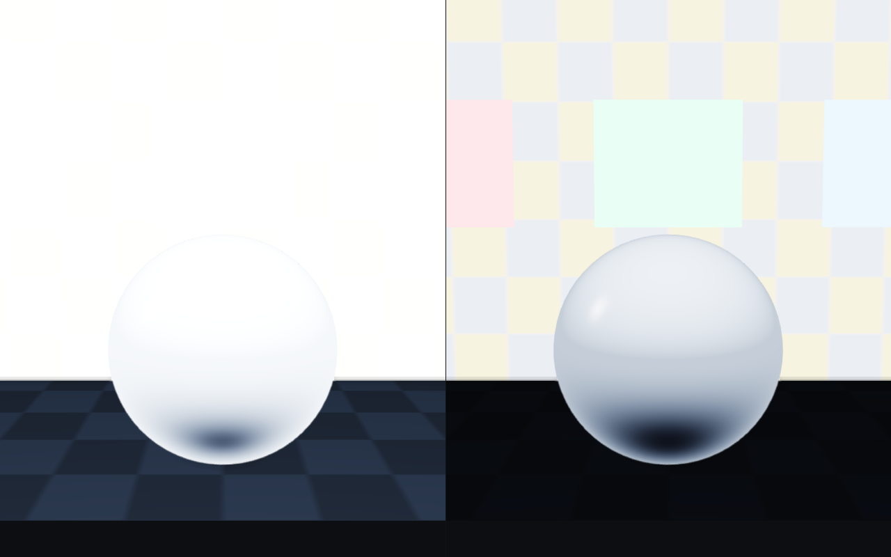 |
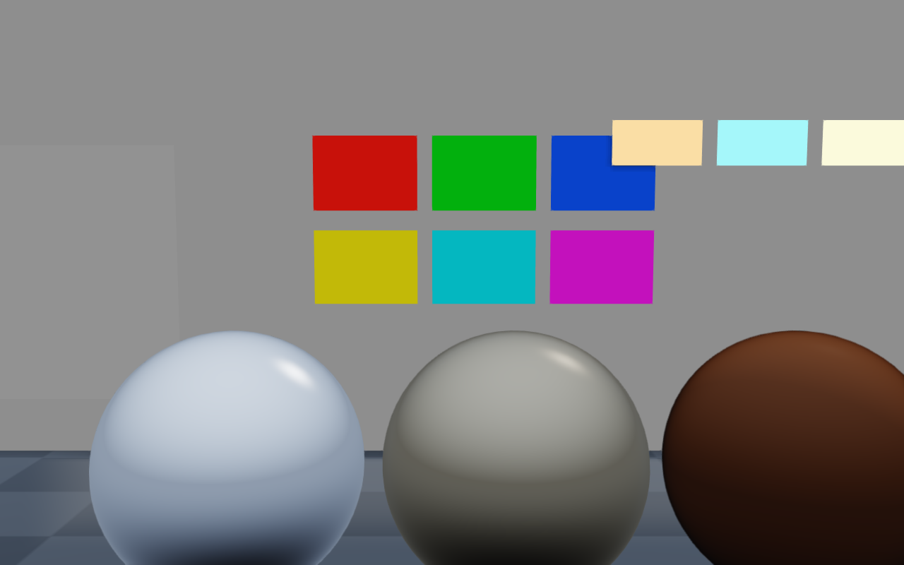 |